One of my main goals is to fly long distances. The RV-8 will take many years to finish, so instead of waiting, I want to start preparing for long cross country flying now. For that I need a plane that fits the mission. One good option is a Mooney, which is a very efficient cross country platform.
Mooneys have four seats, which makes the center of gravity easier to manage when loading bags and extra fuel. They are relatively affordable to buy. The downside is that a Mooney is a certified plane, so maintenance can be expensive. They also look great.
Meeting Paul and His Mooney
I met Paul, who is based at KSQL and owns a Mooney M20C. He showed me around his plane and is very keen and skilled when it comes to Mooneys.
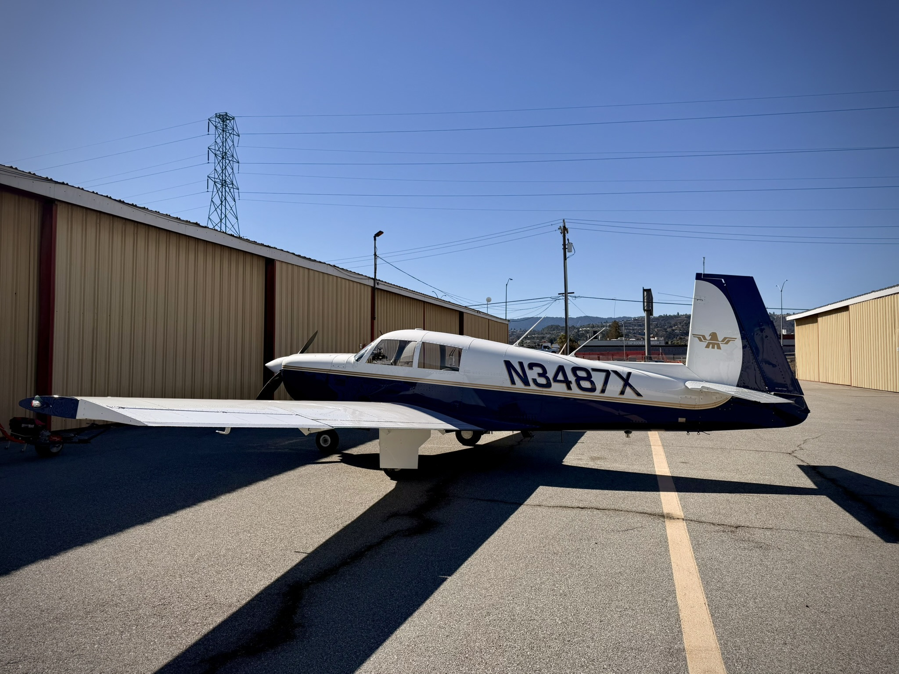
Paul's Mooney M20C, October 2026.
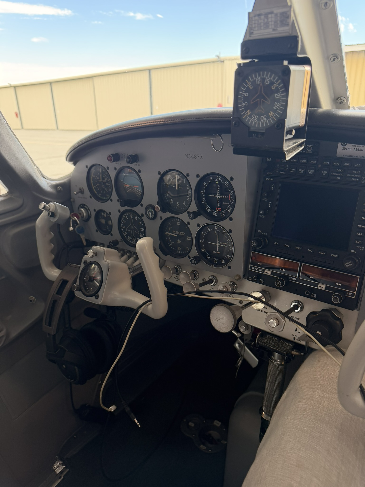
The Mooney M20C flight deck, October 2026.
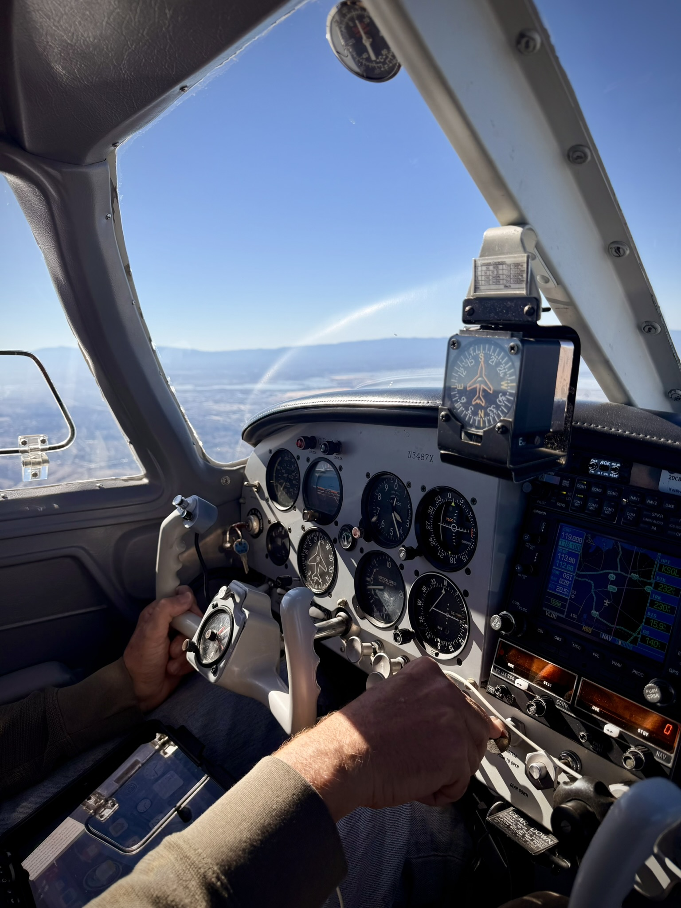
Another look at the panel. Taken in flight, October 2026.
Why the Complex Endorsement
To fly a plane like that, I needed a complex endorsement, so I started preparing and took lessons in a Cessna 172RG at AeroDynamic Aviation out of KRHV. My instructor was Sergey, who is also teaching me tailwheel flying in the Citabria. I got the endorsement on October 20, 2026, after 5.7 hours of training.
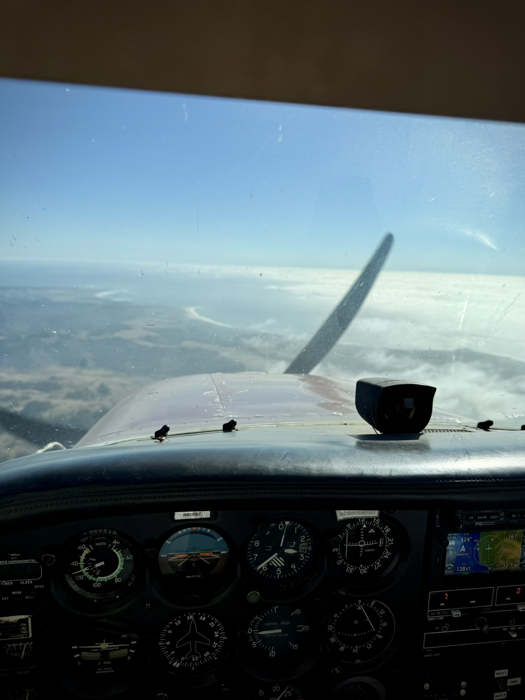
The 172RG flight deck, October 2026.
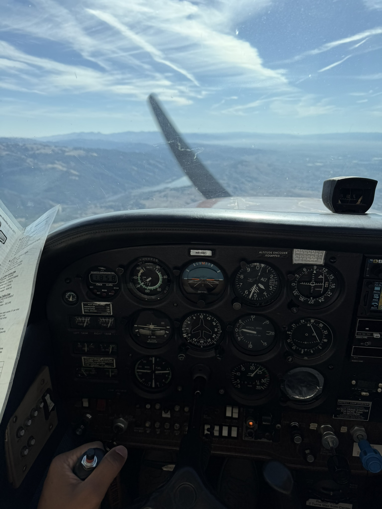
The 172RG panel in flight, October 2026.
Citabria to Complex
I had been flying the Citabria, which is the polar opposite in terms of planning, flying, and in-flight management. In a complex plane, I have to think about flaps, gear, propeller, engine cowl flaps, and engine temperature. The Citabria had none of those concerns. You just come in, and if you are high, you do a slip, stabilize, and land.
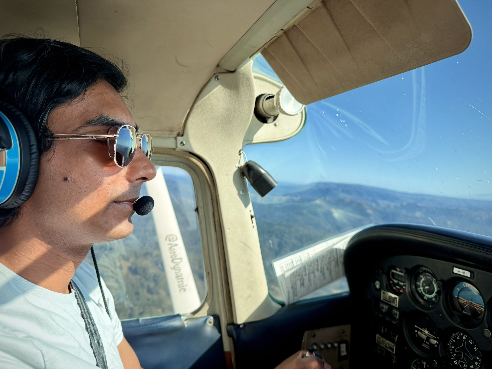
At the controls, October 2026.
A complex plane is faster and needs constant focus on engine management, from overheating and shock cooling to the propeller setting, and of course the gear. You have to stay ahead of the plane. In the pattern and on approach, that means planning about 20 miles out.
Where I Flew
I often flew south to Hollister (KCVH) and Watsonville (KWVI), and sometimes out to the coast.
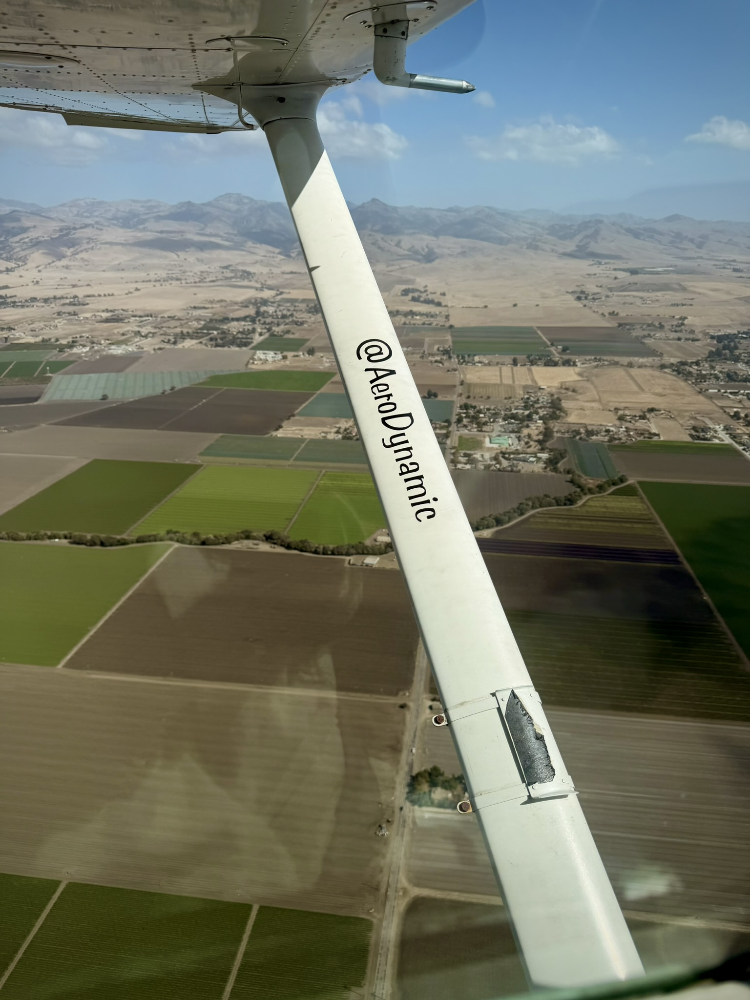
Farmland near Hollister, October 2026.
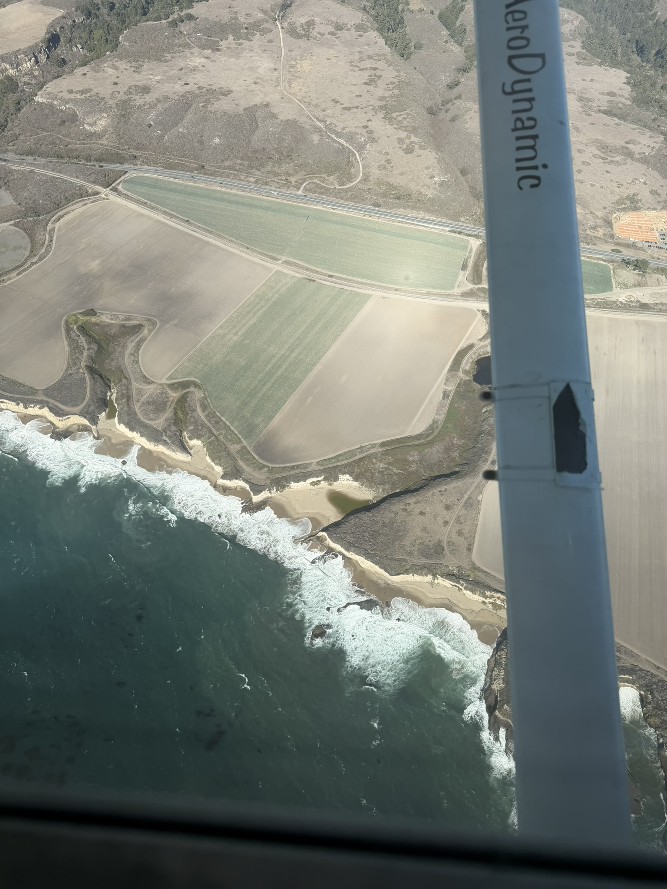
Farmland meeting the coast near Santa Cruz, October 2026.
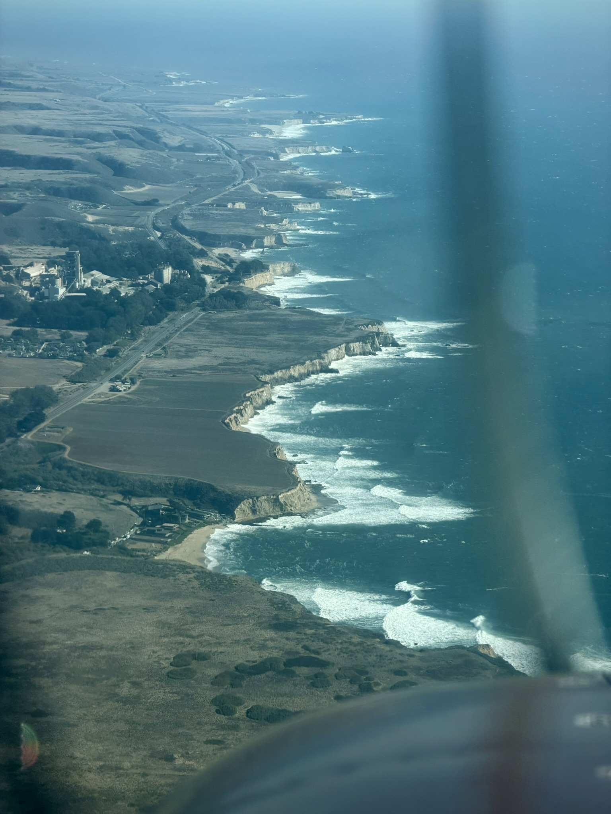
Along the coast, October 2026.
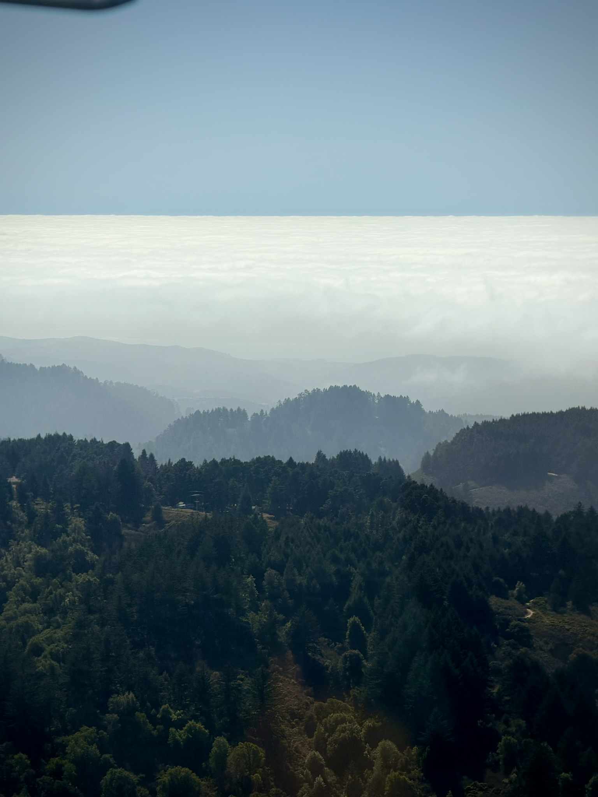
Heading towards Half Moon Bay, October 2026.
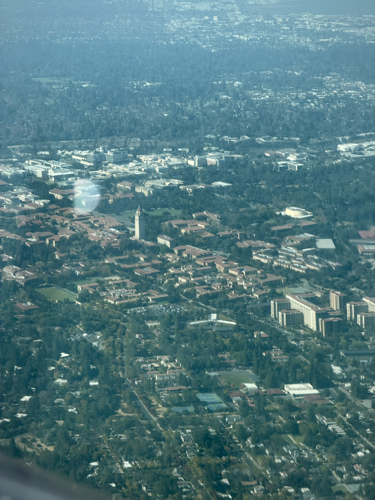
Stanford, October 2026.
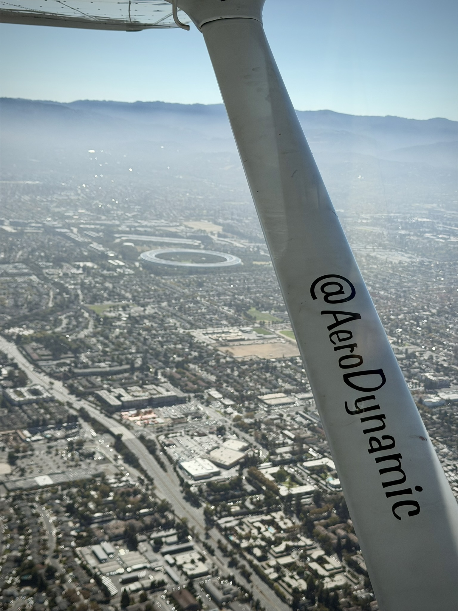
Apple Park in Cupertino, October 2026.
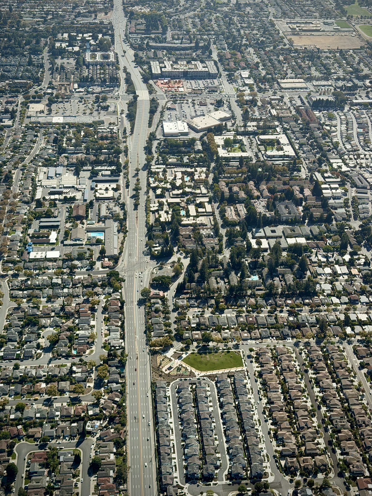
Over the south Bay Area, October 2026.
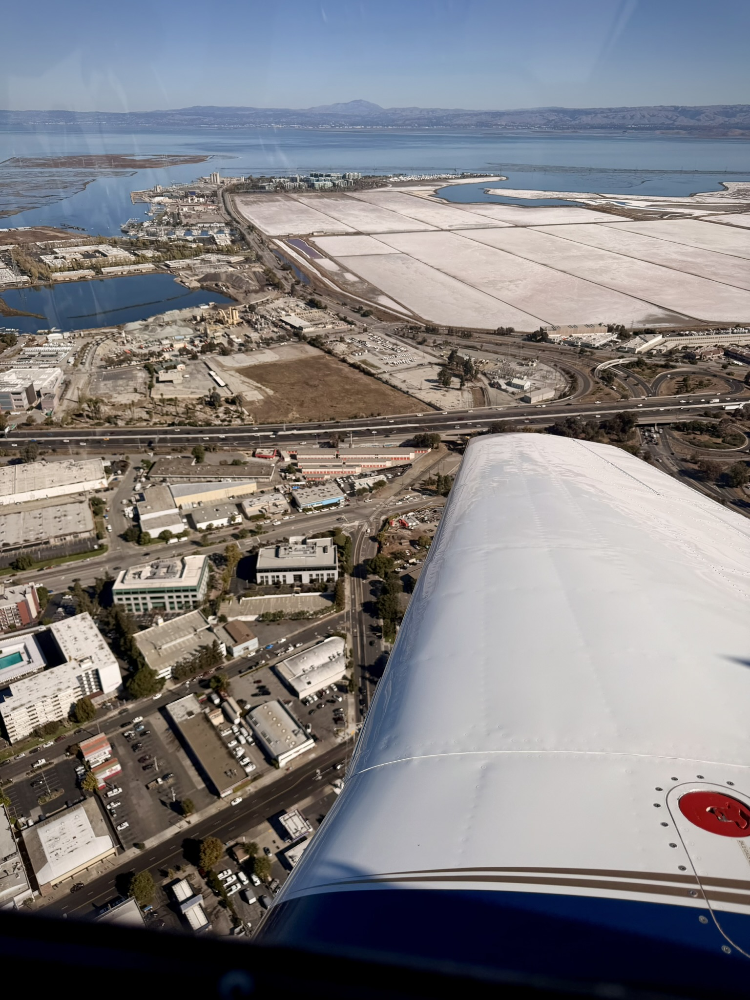
Approaching San Carlos (KSQL) over the salt fields in Paul's Mooney M20C, October 2026.
What's Next
I am looking at getting a Mooney and have been watching for good deals as they come up. I have also flown with Paul to look at local Mooneys for sale in the Bay Area. I have not found the right one yet. I want a plane I can fly for a year before spending on major repairs, and the ones I have seen so far needed quite a lot of work.